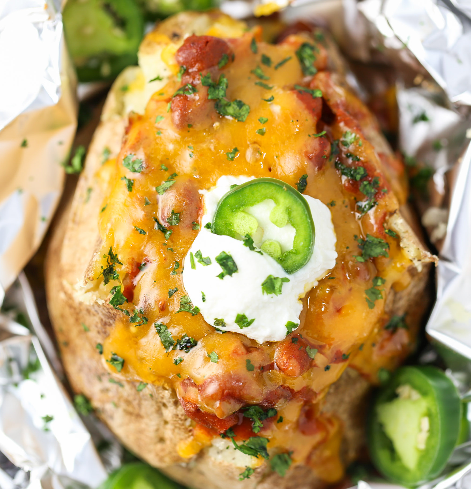

Chili Cheese Potatoes

Beschreibung
Ja sind halt die Aaronschen Chili Cheeses was soll man sagen
Eig ganz lecker so aber auch bisschen spicy na klar, nur halt keine Paprika weil ihr wisst
nichn?
Zutaten
- Kartoffeln halt so 4-5 je nach Hunger, am besten Große weil sind besser
- Reibekäse nach Geschmack ich find Cheddar halt schmackofaxius
- Packung Schmelzkäse (ich nehm Gouda-Geschmack, Sahne geht aber auch)
- Becher Créme Fraiche, am Besten mit Kräutern
- Chappalenos natürlich
- Chayenne oder normalen Pfeffer
- Irgendwas Tabasco mäßiges, je nach Schärfewunsch
Zubereitung
- ja ey Kartoffeln waschen, NICHT schälen und in Backofen auf Umluft
- mach mal so 20 Min ca. und mach diesen Zahnstocher Test ob durch ist halt
- Wenn die durch sind machst aufschneiden so halb halb alle Kartoffeln, lässt bissl auskühlen
- Mit nem Löffel alle Kartoffel-Hälften aushölen und die Masse in ne Schüssel
- Aber noch bisschen was in der Schale lassen, soll schon noch stabil sein
- Zur Masse machste alles an Zutaten so dazu, natürlich den Challapeno kleinhacken gell
- Alles so zsmmixen mäßg außer Reibekäse
- Würz ruhig gut ab die Kartoffel und Créme Fraiche nehmen der Sache viel Schärfe
- Danach wieder alles zurück in die Kartoffeln füllen
- Ruhig gut voll machen das Teil
- Reibekäse nach Wahl drauf und zurück in den Ofen mit dem Lachs
- Noch so 10 min ca. auf mittlerer Hitze über- und fertigbacken
- Fertig und rein in die Olga
zurück Home